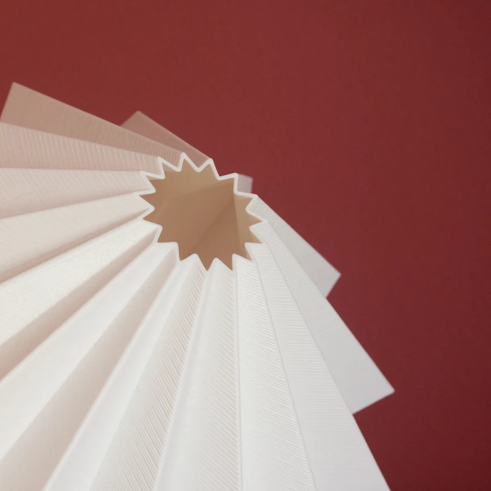

Il design
Starlight è una piega continua che si chiude su se stessa: da spenta è un solido bianco, pieno di spigoli e di righe di stampa. Accesa cambia mestiere — il PLA diventa traslucido e la stessa geometria che prima faceva ombra ora disegna la luce.
Collezione
Spenta è una piega. Accesa è luce.
Prodotta on demand. Consegna in Italia entro il — · spedizione gratuita in Italia · reso entro 14 giorni.
La forma
Il paralume è un unico foglio piegato: due coni che si incontrano sulla linea più larga, come una lanterna di carta irrigidita. Ogni faccia è piana, ogni spigolo è vero — nessuna curva addolcisce il passaggio da una all'altra.
È questa geometria a fare il lavoro quando la lampada si accende. Le facce rivolte verso di te diffondono, gli spigoli restano linee luminose sottili, e dal basso — dove la lampadina è più vicina al materiale — la luce esce più calda. Lo stesso pezzo, nella stessa stanza, ha due vite a seconda dell'interruttore.

Scheda tecnica
PLA di origine vegetale, lo stesso dei vasi Shapeless: deriva da mais e canna da zucchero, non dal petrolio. È il materiale a rendere possibile l'effetto: opaco e bianco da spento, traslucido quando la luce lo attraversa.
Altezza 27 cm, larghezza massima 30 cm sulla linea più larga. È una lampada da tavolo: sta su una consolle, un comodino o una mensola profonda.
Si pulisce con un panno morbido asciutto, seguendo il verso delle pieghe. Niente solventi e niente fonti di calore dirette: il PLA è una bioplastica e non ama le alte temperature.
Starlight nasce in bianco, perché è il colore che lascia passare meglio la luce. Per esigenze particolari — un'altra finitura, una misura diversa, un progetto su misura — scrivici.
Ogni pezzo è prodotto on demand: non teniamo magazzino. La spedizione in Italia è gratuita. Puoi recedere dall'acquisto entro 14 giorni dalla consegna, come previsto dalla legge; il prodotto è coperto dalla garanzia legale di 24 mesi. Tutte le condizioni sono nei Termini e condizioni, che trovi in fondo alla pagina. Per qualsiasi dubbio scrivici a info@shapeless.shop o usa la chat.